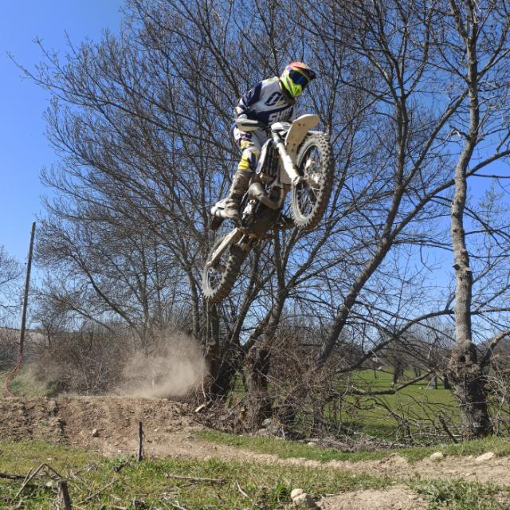

Integrantes del G03
| G03 | |||
|---|---|---|---|
| Nombre | Correo | Foto | Descripción |
| ALEJANDRO AGRAMONTE AGUERO | Palex03@hotmail.com |
Foto |
DescripciónDescription: This younger middle-aged woman wears well tailored gowns and hats with beautiful decoration. She is almost always dressed for an outing in high society, and a wedding ring on her right hand. She has a very tight haircut. She is missing an eye and her face is severely sunburned. Her one remaining eye shines amber. Personality: She is extraordinarily passive and rarely speaks, let alone speaks her mind. She is harsh and unforgiving. |
| SERGIO DOMÍNGUEZ ALCALÁ | Serdom02@ucm.es |
Foto |
DescripciónDescription: This slender woman stands about 3'2". She is wearing the road beaten gear of a warrior. Her blonde hair is drawn into a tight pony tail with a butterfly scrunchie. Her face is feral with sharp distinguishing features. Her spectacle hidden eyes are a deep amber. Personality: She thrives on attention. She does whatever is in her power to gain the attention of whomever she deems a fit date. She is obsessed with finding treasure. |
| JOSÉ RAMÓN RENTERO JIMÉNEZ | jrentero@ucm.es |
Foto |
DescripciónDescription: A man of a pale complexion, he is dressed in an above average manner. His black hair is slicked back into a classic pompadour. His eyes are white. Personality: Abrasive and pushy, he has a hard time making friends. Around other people he will do his best to conceal his emotions and appear jolly. |
| ALBERTO DE LA RUBIA NAVARRO | albedela@ucm.es |
Foto |
DescripciónDescription: This man is unhealthily muscled, almost every single one of his veins is visible when he is not flexing. His shirts and pants tend to be short and undersized for him due to the difficulty of finding a good tailor. He keeps his long black hair kept up in a rat tail. His amber eyes are desperate and heavily dilated. He has the appearance of someone under the heavy influence of drugs. Personality: He has a good heart but also a terrible temper. He will forgive often but not before yelling and berating someone for whatever they have done wrong. He also hits on women, regardless of circumstances. |